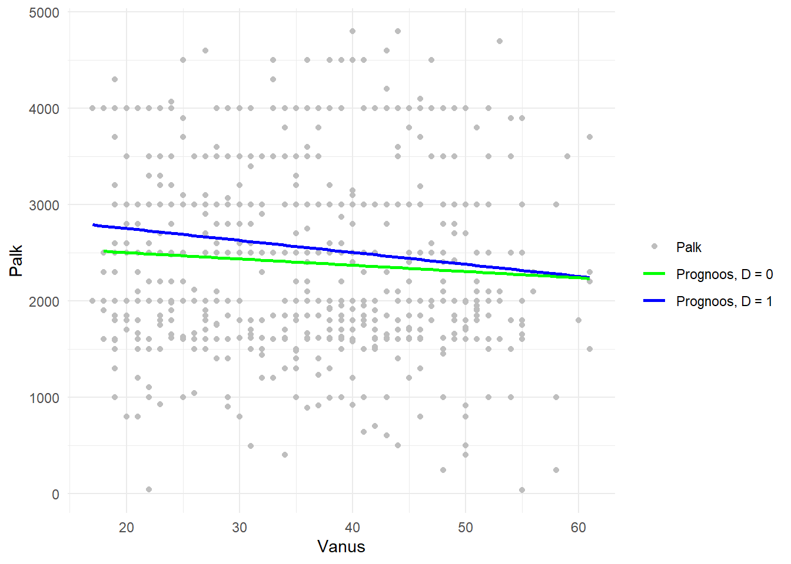
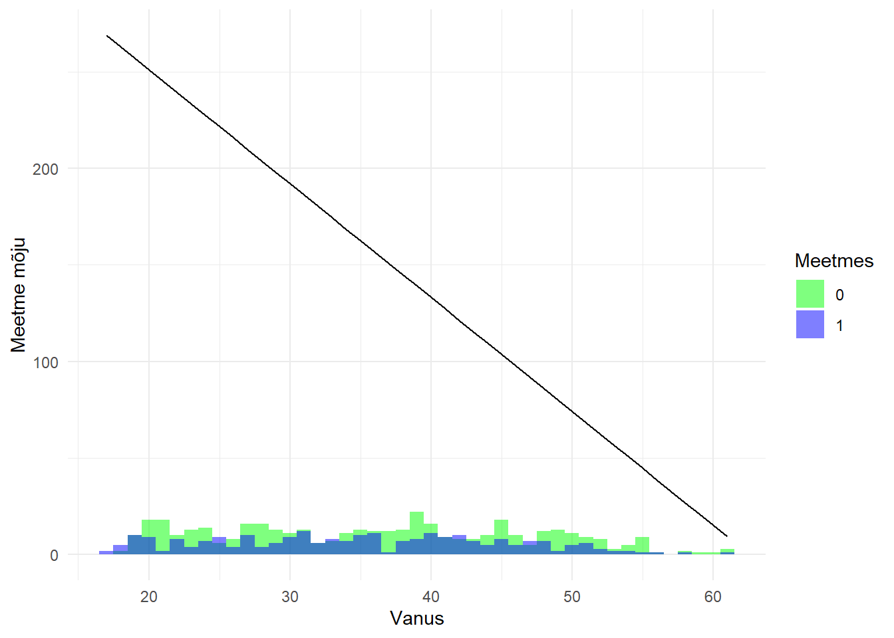

library(dplyr)
library(stargazer)
library(lmtest)
library(sandwich)
library(boot)
library(ggplot2)4 Regressioonimudeli kasutamine
Poolik - arenev
4.1 Mudeli seade
Vaatame mõju (nt meetmes osalemise \(D\) mõju tulemile \(Y\)) hindamise meetodeid, kasutades regressioonimudeleid ja eeldust tingimuslikust sõltumatusest (Conditional Independence Assumption, CIA).
Tingimusliku sõltumatuse eeldus (CIA)
Põhjusliku mõju leidmiseks regressiooniga peab kehtima tingimusliku sõltumatuse eeldus (CIA - conditional independence assumption).
\[E[Y_0 | D=1, \mathbf{X}] = E[Y_0 | D=0, \mathbf{X}]\]
See tähendab, et pärast kõigi oluliste segavate tegurite \(\mathbf{X}\) (eelkõige \(X \rightarrow D\) ja \(X \rightarrow Y\)) arvesse võtmist ei ole potentsiaalsel tulemusel \(Y_0\) ja meetmes osalemisel \(D\) enam seost. Seega, tingimuslikult sarnased osalejad ja mitte-osalejad on võrreldavad.
Regressioonimudelid mõju hindamiseks
Kui CIA kehtib ja eeldame aditiivset (lineaarset) mudelit, saame regressiooniga hinnata erinevaid keskmisi mõjusid.
Tavaline regressioonimudel (ATE hinnang)
Kõige lihtsam mudel eeldab, et mõju \(\delta\) on homogeenne (sama kõigi \(\mathbf{X}\) väärtuste korral) ja aditiivne.
\[Y_i = \alpha + \delta D_i + \mathbf{X}_i \beta + \epsilon_i\]
Või üldjuhul, kui on selgitavaid tegureid rohkem:
Valem: \(Y_i = \alpha + \delta D_i + \beta_1 X_{1i} + \beta_2 X_{2i} + \dots + \epsilon_i\)
Mõju hinnang: \(\hat{\delta}\) on hinnang ATE-le (Average Treatment Effect), st keskmisele mõjule kõigile.
Regressioonimudel interaktsiooniga (heterogeenne mõju)
Kui on alust arvata, et meetme mõju \(D\) sõltub mõnest tunnusest \(X_k\) (st mõju on heterogeenne), lisatakse mudelisse interaktsiooniliige.
\[Y_i = \alpha + \delta D_i + \gamma (D_i \cdot X_{ki}) + \mathbf{X}_i \beta + \epsilon_i\]
Valem: \(Y_i = \alpha + \delta D_i + \gamma (D_i \cdot X_{ki}) + \beta_1 X_{1i} + \dots + \epsilon_i\)
Mõju \(X_{ki}\) väärtusel: \(\text{Mõju} = \hat{\delta} + \hat{\gamma} X_{ki}\).
Kasutamine: Seda mudelit kasutades saab hinnata CATE-t (Conditional Average Treatment Effect), st keskmist mõju alamrühmas, ja leida seejärel kaalutud keskmist leides ATE või ATT.
Kaks eraldi eegressioonimudelit (G-Computation)
See meetod hinnatakse regressioonimudeleid eraldi osalejate (\(D=1\)) ja mitte-osalejate (\(D=0\)) andmetel, mis võimaldab arvestada heterogeenset funktsionaalset seost \(Y_0\) ja \(Y_1\) vahel.
Mudel osalejatel (\(D=1\)): \[Y_i = \alpha_1 + \mathbf{X}_i \beta_1 + \epsilon_{i1} \quad \text{kui } D_i=1\] Prognoosime tulemuse \(Y_{i1}\) kõigile vaatlustele: \(\hat{Y}_{i1} = \hat{\alpha}_1 + \mathbf{X}_i \hat{\beta}_1\).
Mudel mitte-osalejatel (\(D=0\)):
\[Y_i = \alpha_0 + \mathbf{X}_i \beta_0 + \epsilon_{i0} \quad \text{kui } D_i=0\]
Prognoosime tulemuse \(Y_{i0}\) kõigile vaatlustele: \(\hat{Y}_{i0} = \hat{\alpha}_0 + \mathbf{X}_i \hat{\beta}_0\).
- Mõju arvutamine (G-Computation): Mõju on igal isikul prognooside vahe: \(\hat{\Delta}_i = \hat{Y}_{i1} - \hat{Y}_{i0}\).
- ATE (kogu populatsioon): \(\text{ATE} = \frac{1}{N} \sum_{i=1}^N \hat{\Delta}_i\)
- ATT (meetmes osalejatele): \(\text{ATT} = \frac{1}{N_T} \sum_{i: D_i=1} \hat{\Delta}_i\)
- ATU (võrdlusrühmale): \(\text{ATU} = \frac{1}{N_C} \sum_{i: D_i=0} \hat{\Delta}_i\)
See meetod on regressiooni mudeliga hindamise erijuht ja annab paindlikumad hinnangud, kuna võimaldab funktsionaalsel seosel \(Y \sim \mathbf{X}\) olla erinev osalejatel ja mitte-osalejatel.
4.2 Näide tööpoliitikast
Me kasutame näidisandmetena Poliitikauuringute Keskuse Praxis 2002. aastal läbiviidud uuringut aktiivse tööpoliitika mõju hindamise kohta. (Vt Leetmaa, R., Võrk, A., Eamets, R., Sõstra, K. (2003) Aktiivse tööpoliitika tulemuslikkuse analüüs Eestis. Tallinn: Praxis, 108 lk. Vt ka: Praxis töö ja Leetmaa & Võrk (2004))
Anonümiseeritud andmestik asub failis:
http://kodu.ut.ee/~avork/files/oppetoo/micro/atp.csv
Muutujate selgitused
| Muutuja | Selgitus |
|---|---|
training |
Received labour market training in 2000 / Tunnus kas sai tööturukoolitust või ei 2000. aasta esimeses pooles |
nwage |
Netopalk 2002. aasta septembris |
employed |
Employed in September 2002 / Hõivatus 2002. aasta septembris (1 – hõivatud, 0 – töötu või mitteaktiivne) |
status |
Tööturustaatus 2002. aasta septembris (1 – hõivatud, 2 – töötu, 3 – mitteaktiivne) |
kaal |
Sample weight / Vaatluse statistiline kaal |
male |
male / Meessoost |
est |
Estonian / Eestlane |
age |
Vanus aastates 2002. aastal |
langest |
Kas oskab eesti keelt |
emplbefore |
Kas oli töökogemus enne töötuks registreerimist 2000. aastal |
educ |
Haridustase: 1 – ISCED 0,1,2 (põhiharidus); 2 – ISCED 3 (keskharidus); 3 – ISCED 3,4 (kutsekeskharidus); 4 – ISCED 5,6 (kõrgharidus) |
county |
Maakond: Tallinn, Viljandimaa, Tartumaa, Ida-Virumaa |
town |
Elab linnas vs maal |
children |
Laste arv töötuks registreerimise hetkel |
marital |
Perekonna seis töötuks registreerimise hetkel: 0 – vallaline; 1 – abielus; 2 – vabaabielu; 3 – lahutatud; 4 – lesk |
training1 |
Osalusrühm tingimusel, et ei nõutud tõendit hilisema töö saamise kohta – kellelt nõuti, neil puuduv väärtus |
training2 |
Võrdlusgrupp, kes soovisid, kuid ei saanud/soovinud osaleda mingil põhjusel |
training3 |
Kombinatsioon training2 ja training3: need osalusgrupist, kellelt ei nõutud töökohta; need võrdlusgrupist, kes uurisid koolitust, kuid ei osalenud |
training4 |
Koolituse osalusrühmas ja võrdlusrühmas mõlemas ainult need, kes ise uurisid |
training5 |
Koolituse põhirühmas ja võrdlusrühmas mõlemas ainult need, kes ise uurisid ja kellelt ei nõutud tõendit |
Vajalikud paketid
Andmestiku lugemine
atp <- read.csv("http://kodu.ut.ee/~avork/files/oppetoo/micro/atp.csv")Kirjeldav analüüs
Leidke, mitu inimestest osales 2000. aastal koolituses ja mitu ei osalenud
table(atp$training)
0 1
878 429 Kui suur osakaal koolituses osalejatest ja mitte-osalejatest töötas 2002. aasta septembris? Tabuleerige muutujad “training” ja “employed” ning leidke protsendid.
tab <- table(atp$training, atp$employed)
prop.table(tab, margin = 1)
0 1
0 0.4100228 0.5899772
1 0.2913753 0.7086247Milline oli keskmine palk koolituses osalejatel ja mitte-osalejatel 2002. aasta septembris?
atp %>% group_by(training) %>% summarise(mean_wage = mean(nwage, na.rm = TRUE))# A tibble: 2 × 2
training mean_wage
<int> <dbl>
1 0 1678.
2 1 2042.Regressioonimudel
Hinnake regressioonimudel, kus väljundid employed ja nwage sõltuvad ainult koolituses osalemisest.
m1 <- lm(employed ~ training, data = atp)
m2 <- lm(nwage ~ training, data = atp)
stargazer(m1, m2, type = "text")
====================================================================
Dependent variable:
------------------------------------------------
employed nwage
(1) (2)
--------------------------------------------------------------------
training 0.119*** 363.850***
(0.028) (119.754)
Constant 0.590*** 1,677.766***
(0.016) (68.337)
--------------------------------------------------------------------
Observations 1,307 1,256
R2 0.013 0.007
Adjusted R2 0.013 0.007
Residual Std. Error 0.480 (df = 1305) 1,988.834 (df = 1254)
F Statistic 17.591*** (df = 1; 1305) 9.231*** (df = 1; 1254)
====================================================================
Note: *p<0.1; **p<0.05; ***p<0.01Hinnake mudelid koos teiste selgitavate teguritega
atp$age2 <- atp$age^2
lin_employed <- lm(employed ~ training + male + est + age + age2 + educ + emplbefore, data = atp)
coeftest(lin_employed, vcov = vcovHC(lin_employed, "HC1"))
t test of coefficients:
Estimate Std. Error t value Pr(>|t|)
(Intercept) -0.15070176 0.15151587 -0.9946 0.3201030
training 0.09816437 0.02764834 3.5505 0.0003983 ***
male 0.07986481 0.02872120 2.7807 0.0055027 **
est 0.09711124 0.02694719 3.6038 0.0003255 ***
age 0.02945808 0.00978750 3.0098 0.0026649 **
age2 -0.00040217 0.00012743 -3.1560 0.0016364 **
educ 0.05265150 0.01496051 3.5194 0.0004475 ***
emplbefore 0.05064137 0.05218072 0.9705 0.3319782
---
Signif. codes: 0 '***' 0.001 '**' 0.01 '*' 0.05 '.' 0.1 ' ' 1Hinnake samasugune mudel ka palga kohta ja tõlgendage tulemusi.
lin_nwage <- lm(nwage ~ training + male + est + age + age2 + educ + emplbefore, data = atp)
coeftest(lin_nwage, vcov = vcovHC(lin_nwage, "HC1"))
t test of coefficients:
Estimate Std. Error t value Pr(>|t|)
(Intercept) -1284.89226 687.88260 -1.8679 0.06201 .
training 254.84877 111.15732 2.2927 0.02203 *
male 871.32268 138.00166 6.3139 3.775e-10 ***
est 821.63833 127.20240 6.4593 1.504e-10 ***
age 82.57500 43.00273 1.9202 0.05506 .
age2 -1.33722 0.53949 -2.4786 0.01332 *
educ 297.93783 61.36353 4.8553 1.354e-06 ***
emplbefore 540.05556 220.40577 2.4503 0.01441 *
---
Signif. codes: 0 '***' 0.001 '**' 0.01 '*' 0.05 '.' 0.1 ' ' 1Tõlgendage tulemusi!
Lubage võimalikku heteroskedastiivsust.
Leiame robustsed standarvead.
robust_se1 <- sqrt(diag(vcovHC(lin_employed, type = "HC1")))
robust_se2 <- sqrt(diag(vcovHC(lin_nwage, type = "HC1")))
stargazer(lin_employed, lin_nwage, se = list(robust_se1, robust_se2), type = "text", no.space = TRUE)
====================================================================
Dependent variable:
------------------------------------------------
employed nwage
(1) (2)
--------------------------------------------------------------------
training 0.098*** 254.849**
(0.028) (111.157)
male 0.080*** 871.323***
(0.029) (138.002)
est 0.097*** 821.638***
(0.027) (127.202)
age 0.029*** 82.575*
(0.010) (43.003)
age2 -0.0004*** -1.337**
(0.0001) (0.539)
educ 0.053*** 297.938***
(0.015) (61.364)
emplbefore 0.051 540.056**
(0.052) (220.406)
Constant -0.151 -1,284.892*
(0.152) (687.883)
--------------------------------------------------------------------
Observations 1,307 1,256
R2 0.051 0.109
Adjusted R2 0.046 0.104
Residual Std. Error 0.472 (df = 1299) 1,888.387 (df = 1248)
F Statistic 9.954*** (df = 7; 1299) 21.885*** (df = 7; 1248)
====================================================================
Note: *p<0.1; **p<0.05; ***p<0.01Kas robustsete standardvigade kasutamine muudab statistilist parameetrite statistilist olulisust?
Eraldi mudelid osalejatele ja mitteosalejatele
Näide - meetme mõju palgale vanuse lõikes
atpj <- atp %>% filter(!is.na(nwage)) %>%
filter(nwage<5000, nwage>0)
ggplot(atpj,
aes(x = age, y = nwage, color = "Palk")) +
geom_point() +
geom_smooth(data = atpj %>% filter(training ==1), method = "lm",
# formula = y ~ poly(x, 2),
se = FALSE,
aes(color = "Prognoos, D = 1")) +
geom_smooth(data = atpj %>% filter(training ==0), method = "lm",
# formula = y ~ poly(x, 2),
se = FALSE,
aes(color = "Prognoos, D = 0")) +
scale_color_manual(name = "", values = c("Palk" = "grey",
"Prognoos, D = 1" = "blue",
"Prognoos, D = 0" = "green")) +
theme_minimal() +
labs(x = "Vanus", y = "Palk", color = "")`geom_smooth()` using formula = 'y ~ x'
`geom_smooth()` using formula = 'y ~ x'
atpj$ate <-
predict(lm(nwage ~ age, data=atpj[atpj$training==1,]), new=atpj) -
predict(lm(nwage ~ age, data=atpj[atpj$training==0,]), new=atpj)See joonis näitab, kuidas vanus mõjutab palka kahes erinevas grupis (osalejad vs mitte-osalejad). Kasutame valemi \(Y \sim X\) seost vanuse osas.
Mõju sõltub vanusest. Mida noorem, seda suurem efekt.
ggplot(atpj,
aes(x = age, y = ate)) +
geom_line() +
#geom_rug(sides = "b") +
#geom_histogram(aes(y = ..count..),
# binwidth = 1, alpha = 0.9, fill = "grey", position = "identity") +
geom_histogram(aes(fill = as.factor(training), y = ..count..),
binwidth = 1, alpha = 0.5, position = "identity") + # Colored histogram by gender
scale_fill_manual(values = c("green", "blue")) +
theme_minimal() +
labs(x = "Vanus", y = "Meetme mõju", fill = "Meetmes")Warning: The dot-dot notation (`..count..`) was deprecated in ggplot2 3.4.0.
ℹ Please use `after_stat(count)` instead.
Lisame täiendavad selgitavad tunnused
Töötamise jaoks
Hindame mudeli osalejate andmete põhjal ja prognoosime tulemused kõigile.
lin_employed_ra1 <- lm(employed ~ male + est + age + age2 + educ + emplbefore, data = atp[atp$training == 1, ])
atp$pemployed_1 <- predict(lin_employed_ra1, newdata = atp)Hinnake samasugune mudel ka mitteosalejate põhjal training==0 ja prognoosige tulemused kõigile
lin_employed_ra0 <- lm(employed ~ male + est + age + age2 + educ + emplbefore, data = atp[atp$training == 0, ])
atp$pemployed_0 <- predict(lin_employed_ra0, newdata = atp)Leiame individuaalsed erinevused prognoositud hinnangutes
atp$demployed <- atp$pemployed_1 - atp$pemployed_0Keskmised mõjuhinnangud (ATE) ja eraldi ka osalejatele ning mitteosalejatele
ate_empl <- mean(atp$demployed)
att_empl <- mean(atp$demployed[atp$training == 1])
atu_empl <- mean(atp$demployed[atp$training == 0])
ate_empl[1] 0.1063243att_empl[1] 0.0926108atu_empl[1] 0.1130248Kas tulemused muutusid võrreldes ühise regressioonimudeliga?
Sama palgaga
lin_nwage_ra1 <- lm(nwage ~ male + est + age + age2 + educ + emplbefore, data = atp[atp$training == 1, ])
atp$nwage_1 <- predict(lin_nwage_ra1, newdata = atp)
lin_nwage_ra0 <- lm(nwage ~ male + est + age + age2 + educ + emplbefore, data = atp[atp$training == 0, ])
atp$nwage_0 <- predict(lin_nwage_ra0, newdata = atp)
atp$dnwage <- atp$nwage_1 - atp$nwage_0
ate_nwage <- mean(atp$dnwage)
att_nwage <- mean(atp$dnwage[atp$training == 1])
atu_nwage <- mean(atp$dnwage[atp$training == 0])
ate_nwage[1] 259.2266att_nwage[1] 254.2755atu_nwage[1] 261.6458Kas koolituse mõju on suurem osalejatele või oleks olnud suurem mitte-osalejatele? Kas mõju on statistiliselt oluline?
Bootstrapping hinnangute standardvea leidmiseks - fännidele
Teeme funktsiooni
f <- formula(employed ~ male + est + age + age2 + educ + emplbefore)
mybs = function(data, indices, formula =f) {
dat = data[indices, ]
dify = predict(lm(formula, data = dat[dat$training == 1, ]), newdata = dat) -
predict(lm(formula, data = dat[dat$training == 0, ]), newdata = dat)
c(ate = mean(dify), att = mean(dify[dat$training == 1]))
}ja rakendame seda
set.seed(1632)
results <- boot(data = atp, statistic = mybs, R = 50, stype = "i")
boot.ci(results)Warning in norm.inter(t, adj.alpha): extreme order statistics used as endpointsBOOTSTRAP CONFIDENCE INTERVAL CALCULATIONS
Based on 50 bootstrap replicates
CALL :
boot.ci(boot.out = results)
Intervals :
Level Normal Basic Studentized
95% ( 0.0528, 0.1499 ) ( 0.0510, 0.1590 ) ( 0.0621, 0.1969 )
Level Percentile BCa
95% ( 0.0536, 0.1617 ) ( 0.0503, 0.1415 )
Calculations and Intervals on Original Scale
Some basic intervals may be unstable
Some studentized intervals may be unstable
Some percentile intervals may be unstable
Warning : BCa Intervals used Extreme Quantiles
Some BCa intervals may be unstable